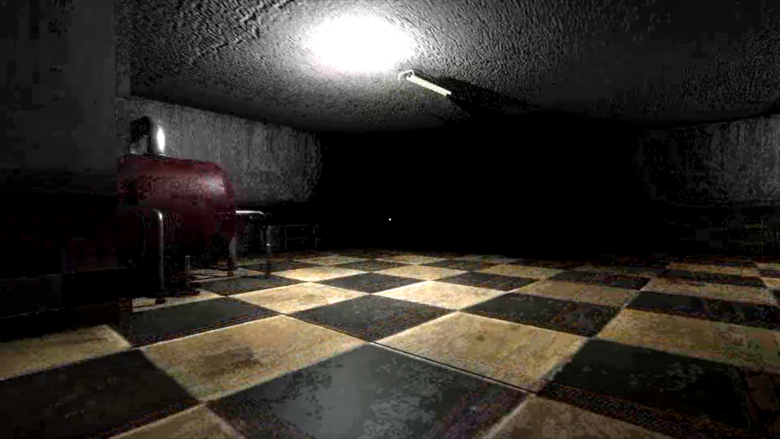

Software engineer who ships — full-stack web apps, AI systems, and a game on Steam.
I'm Landon Armstrong, based in Issaquah, WA. M.S. in Computer Science from Saint Martin's University (Dean's List, 2019–2024). I build things end to end: design, implementation, tests, CI/CD, and deployment.


DentaVision
Full-stack dental SaaS built from my experience as a patient care coordinator. Clinics photograph printed treatment plans; Claude Vision parses them into CDT-coded, visit-by-visit schedules that patients review through an interactive SVG tooth chart and an AI chat assistant. 20 Jest tests gate every deploy through GitHub Actions to Vercel and Render.
AI platform
AgentForge
Multi-LLM agent builder: create, configure, and chat with agents on OpenAI or Anthropic models. Real-time SSE token streaming, a tool-calling loop with a live execution trace, parallel model comparison with latency benchmarks, and persistent history via Prisma.
Cloud / healthcare
MedInsight API
Healthcare REST API for clinical notes: LangGraph multi-agent pipeline with RAG retrieval, field-level AES-256 encryption, and HIPAA-aligned audit logging. Containerized on AWS ECS Fargate with Terraform-provisioned infrastructure; 40 pytest tests cover auth, CRUD, encryption, and the audit trail.
RAG pipeline
DocuChat
Document Q&A with grounded, cited answers. End-to-end retrieval: sliding-window chunking, local sentence-transformer embeddings, ChromaDB cosine search, and Claude-generated responses with source citations, served from FastAPI.
Published on Steam
Echoed Nights
First-person Unity horror game, shipped on Steam with full ownership from concept through QA. NavMesh pathfinding, finite-state-machine enemy AI, and bi-weekly stakeholder deliverables.

Team lead
WAVets2Tech Portal
Led a team of four through the full SDLC building a veteran-to-tech career platform for Saint Martin's University — requirements through client delivery.
Patient Care Coordinator
- Generate monthly KPI reports for executive leadership; identified scheduling inefficiencies that improved provider utilization across a 10+ provider practice.
- Manage patient recall workflows and front-end data systems — clinical experience that directly shaped DentaVision's product requirements.
Graduate Assistant / Teaching Assistant
- Conducted code reviews and 1:1 debugging sessions for 8+ students per semester across data structures, algorithms, and software engineering coursework.
- Designed project rubrics and evaluated student implementations of data structures, graph algorithms, and relational SQL.
Sales Service Expert
- Exceeded monthly enrollment targets through consultative selling; onboarded new members and maintained long-term retention relationships.
- Languages
- JavaScript / TypeScript, Python, C#, SQL, Java
- Web
- React, Next.js, Node.js / Express, FastAPI, ASP.NET Core, REST APIs, Prisma, EF Core
- AI / ML
- Claude & OpenAI APIs, LangGraph, RAG pipelines, ChromaDB, sentence transformers, SSE streaming, tool calling
- Cloud / infra
- AWS (ECS, S3, DynamoDB), Docker, Terraform, GitHub Actions CI/CD, MongoDB Atlas, MySQL, SQLite
- Games
- Unity 3D, NavMesh, FSM enemy AI, game design
M.S. Computer Science, Saint Martin's University — May 2024
B.S. Computer Science, Saint Martin's University — May 2023
Dean's List 2019–2024 · NCAA Track & Field 2019–2024 · Coursework in algorithms, databases, AI, cryptography, cloud technologies, and game development.
I'm looking for an entry-level software engineering role where I can contribute across the stack. The fastest way to reach me is email.